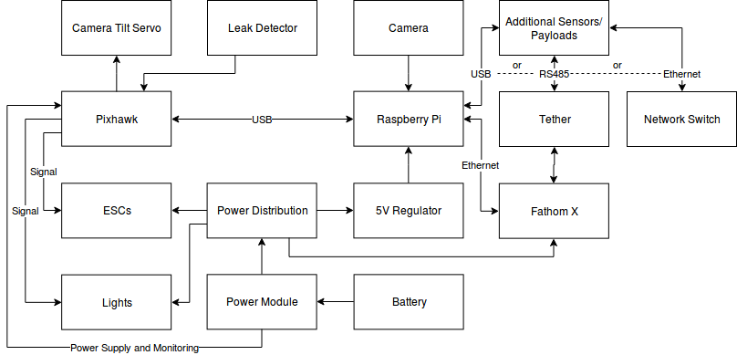

Hardware Components
We will divide the hardware required to run ArduSub into three categories:
- Topside components: A joystick and a computer are required
- ROV components: An autopilot and (typically) a companion computer are required, as well as various other bits and pieces.
- Tether components: A suitable tether is required for operation. Sorry, your RC radio and WiFi connection will not penetrate water. In some cases, additional electronics are required at the ends of the tether to achieve reliable communications.
Topside Components
Computer
The following operating systems are supported use with the topside software (QGroundControl):
- Windows 10
- macOS 10.10 or later
- Ubuntu 16.04 or later
Joystick
The following joysticks are supported for use with the topside software (QGroundControl):
- Logitech F310
- Logitech F710
- Microsoft Xbox controllers
- Wired PlayStation 4 controllers
ROV Components
Below is a typical diagram of hardware components on the ROV and their connections. Please note that many of the components on this diagram are optional, and this is not the only possible hardware configuration.

Autopilot
The autopilot is responsible for controlling the ROV. The autopilot will typically have multiple on-board sensors like gyroscopes, accelerometers, and a compass to determine the vehicle's attitude. The autopilot processes the pilot input and sensor data, and controls the motors, lights, servos, and relays on the vehicle.
Depth Sensor
ArduSub supports the use of the MS5837 (used in the Bar30) as an external water pressure and depth sensor. A depth sensor will need to be connected to the autopilot in order to use Depth Hold mode.
Leak Sensor
ArduSub can be configured to read leak sensors, and perform a failsafe action when a leak is detected. The SOS leak sensor is an excellent option.
Battery
It is recommended to design your vehicle to operate on battery power. Powering an ROV through the tether is not a trivial task, and is outside the scope of this documentation. Battery selection can be intimidating due to the overwhelming number of options, but there are only a few important considerations:
- Voltage: Batteries often specify their voltage as well as a corresponding 'S' rating indicating the number of 3.7V cells in wired in Series inside the battery. The voltage of your battery needs to be matched to the ratings of your ESCs. The Blue Robotics ESCs support 3S (11.1V) and 4S (14.8V) batteries.
- Capacity Batteries usually specify their capacity in units of mAh, the larger this number, the more energy the battery will store, and the longer you can run your ROV.
- Current Rating: Batteries usually specify a C rating for Current. In order to calculate the rated current in Amps, multiply the capacity of the battery in Ah (mAh/1000) times the C rating. For example, a 10000 mAh (10 Ah) battery with a 10C rating is rated for 100 Amps. As a general rule of thumb, your battery should be rated for a continuous current draw of 15 Amps times the number of thrusters.
This battery is a good bet for most cases, and it will fit inside a 3" diameter enclosure.
Companion Computer
The Companion Computer has two major functions on the ROV:
- Streaming HD video to the surface computer
- Relaying communications between the autopilot and the Surface Computer via Ethernet communications
The companion computer must be running the Companion Computer Software to function correctly with ArduSub. Currently, only the Raspberry Pi 3 model B (not yet B+) is supported for use with the Companion Computer Software.
Camera
The Companion Computer will stream HD video to the Ground Control Station at the surface. The Raspberry Pi camera and USB webcams with H.264 output are supported. The following USB webcams have been tested to work with the Companion Computer software:
Motors and ESCs
ArduSub is designed to work with brushless motors. Brushless motors require Electronic Speed Controllers (ESCs) to operate. ArduSub requires all of the motors to operate in forward and reverse, so the ESC must support this functionality. Most ESCs for UAVs and Drones only operate in one direction! The following ESCs are supported for use with ArduSub:
- Blue Robotics Basic ESC
Sponsored by Blue Robotics. Code released under the GPLv3 License. Documentation released under the CC-NC-SA 4.0.
Submit a Documentation GitHub Issue here to report any errors, suggestions, or missing information in this documentation.
Submit an ArduSub GitHub Issue here to report issues with the ArduSub software.